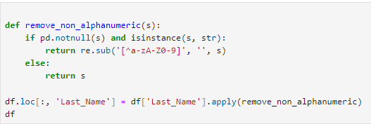
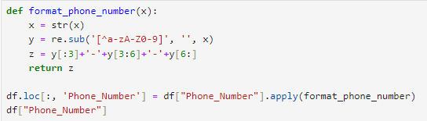
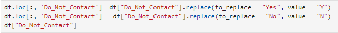
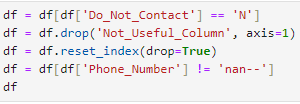

by Garikayi Tarambiwa

This dataset, which is arbitrarily generated, can be accessed here.
The dataset was initially loaded from an Excel file using the pandas.read_excel() function. After loading the data, it was displayed for an initial inspection.
Next, any duplicate rows in the DataFrame were identified and removed. This was an essential step in ensuring the data's integrity, as it minimized redundancy.
The Last_Name column was then cleaned by removing any non-alphanumeric characters. This was done using a custom function, remove_non_alphanumeric(), which used a regular expression to replace anything that was not a letter or number with an empty string.
Fig 1. SQL Query to remove non-alphanumeric characters.
Subsequently, the phone numbers in the Phone_Number column were formatted to a consistent structure. Another custom function, format_phone_number(), was implemented to remove any non-alphanumeric characters and reformat the numbers to the 'xxx-xxx-xxxx' structure.
Fig 2. SQL Query to format the Phone_Number column.
In the Paying Customer and Do_Not_Contact columns, the terms "Yes" and "No" were replaced with "Y" and "N", respectively. This standardization made the values in these columns more consistent and easier to work with.
Fig 3. Replace Query
The DataFrame was then filtered to only include rows where the Do_Not_Contact column was 'N', i.e., where the customer could be contacted. The Not_Useful_Column was dropped from the DataFrame, as it did not provide any useful information.
Finally, the DataFrame was reset, and any rows where the Phone_Number was 'nan--' were removed. The index of the DataFrame was also reset to ensure it was consistent and started from zero.
Fig 4. Resetting the index
The Jupyter Notebook to open the full python script for this project can be found here.